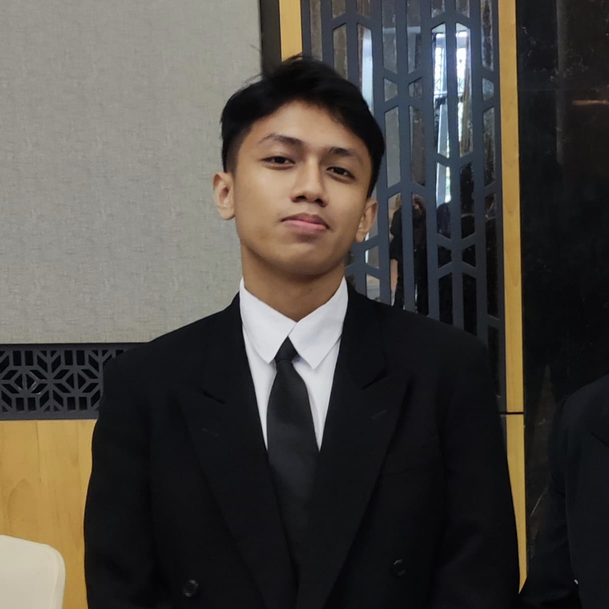

Sayyid Daffa ' Al Mubarok
DESKRIPSI DIRI
Saya mahasiswa Teknik Informatika ITS angkatan 2023. Saya mahasiswa yang sangat berminat dibidang analisis data, sains data, matematika dan fisika. Saya sangat suka untuk mencari kegiatan yang dapat menunjang minat dan bakat saya dalam belajar.